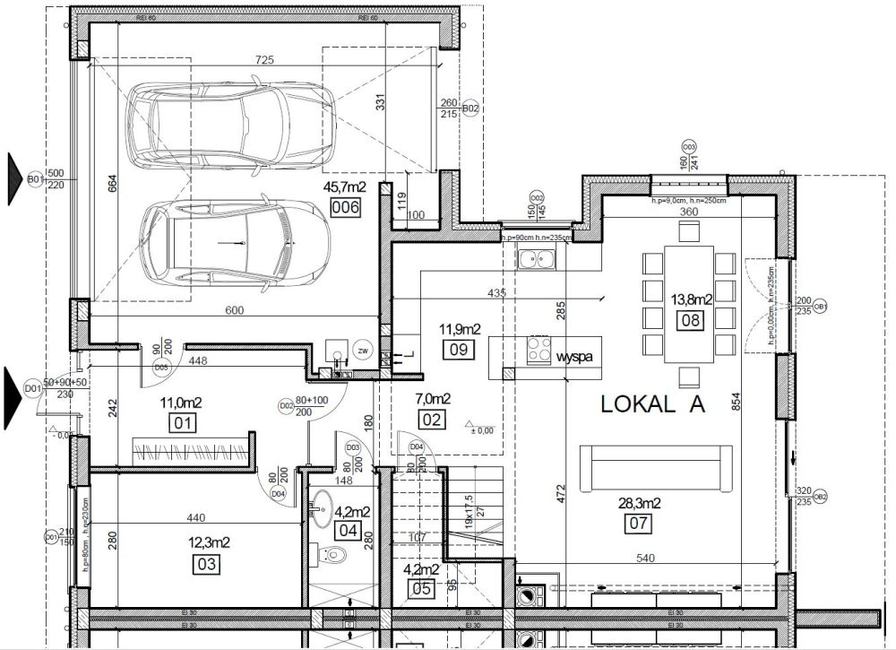
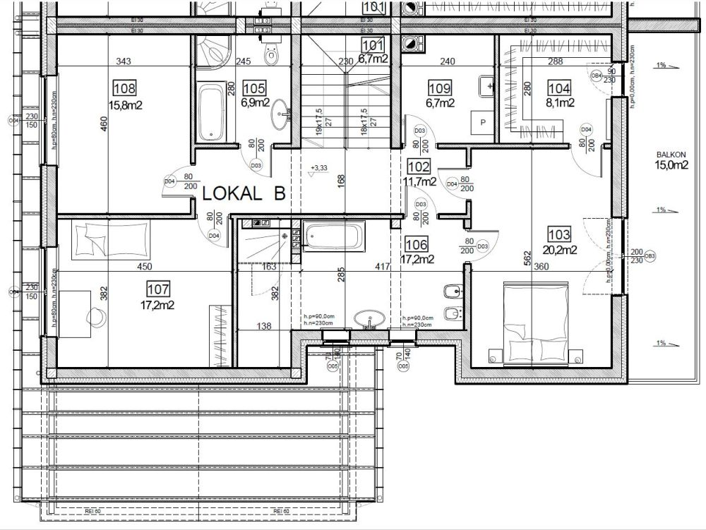

Menu

Nieruchomość stanowi dom jednorodzinny dwulokalowy. Do wyboru jeden z dwóch lokali, które są swoim lustrzanym odbiciem i oddzielone są ścianą przeciwpożarową. Lokale do sprzedaży z niezależną i ogrodzoną działką oraz dostępem do wszystkich mediów - prąd, gaz, woda oraz nowo wybudowana kanalizacja w ul. Sportowej.
Lokalizacja
Nieruchomość położona na ul. Sportowej, miejscowość Zielonki Wieś, gmina Stare Babice. Bliskość do ul. Warszawskiej i ul. Sienkiewicza stanowi korzystną lokalizację zarówno dla celów dojazdu do centrum Warszawy (ul. Warszawska bezpośrednio łączy się z drogą ekspresową S8), jak i chęci wyjazdu wgłąb Polski. Dynamicznie rozwijająca się infrastruktura w okolicy i nowa droga asfaltowa ul. Sportowej ze ścieżką rowerową i chodnikiem gwarantuje uśmiech na twarzy mieszkańców.
Informacje
Działka każdego z segmentów ma powierzchnię 470m2 w tym ok. 210m2 ogródka na tyłach domu. Powierzchnia jednego lokalu to ok. 250m2 obejmujących parter i piętro. W cenie zawiera się również ocieplone poddasze pod indywidualną aranżację. Osiągnięcie stanu deweloperskiego budynku nastąpi między II, a III kwartałem 2019r.
Udogodnienia
- 30 lat doświadczenia deweloperskiego na lokalnym rynku nieruchomości oraz współpraca ze zgranym zespołem specjalistów branżowych pozwoliły nam wykreować bryłę funkcjonalną i sprawdzoną. Układ niektórych pomieszczeń pozwala na wydzielenie dodatkowej łazienki/pralni, bądź pokoju/gabinetu.
- Obszerny garaż dwustanowiskowy o pow. ok. 45m2 łączący wjazd na działkę z ogródkiem. Możliwość zaparkowania 4 samochodów osobowych na posesji.
- Każdy z lokali wyposażono w taras o pow. ok. 20m2 zadaszony przez balkon o konstrukcji żelbetowej monolitycznej o pow. 15m2 z dostępem przez sypialnię oraz garderobę.
- Pod schodami wyodrębniono schowek/spiżarnię, gdzie bez problemu wpasuje się dodatkowa lodówka, artykuły spożywcze lub inne rzeczy materialne.
- Minimalizacja hałasu między Sąsiadami zapewniona przez podwójną ścianę wykonaną z pełnych bloczków silikatowych akustycznych gr. 18cm oddzielonych warstwą wełny akustycznej.
- Stan deweloperski obejmuje: dach pokryty blachodachówką, tynki, wylewki, instalacja kominowa, okna, drzwi wejściowe, brama garażowa, instalacja elektryczna, hydrauliczna, wykończenie elewacji, ogrzewanie podłogowe, teren wyrównany i uporządkowany. Szczegółowy opis standardu dostępny na życzenie.
Rzuty kondygnacji
LOKAL A
Rzut parteru dla lokalu A 
LOKAL B
Rzut piętra dla lokalu B 
Wizualizacja vs. Budowa
LOKAL A
Wejście - Wiatrołap (Przedpokój)

Salon (Widok na klatkę schodową)

Salon (Widok na jadalnię)

Kuchnia (możliwa wyspa)

Łazienka na parterze

Łazienka master na piętrze

Łazienka dodatkowa na piętrze

Kontakt
Spotkania informacyjne i wizyty na budowie na życzenie Klienta.
Kacper Kowalewicz |
Maciej Kowalewicz |
|---|---|
+48 723-601-906 |
+48 601-443-111 |
kacper.kowalewicz@gmail.com |
maciej-kowalewicz@wp.pl |
Rzuty kondygnacji, elewacja i PZT: Pracownia Projektowa EURO Wizualizacja wnętrz: EG Projekt Ewelina Golinowska